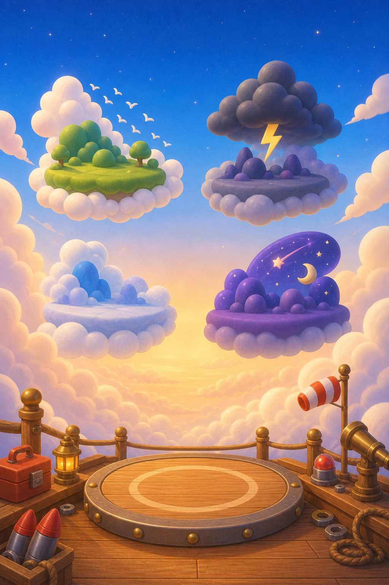

DESTINATION＝行き先選び：シーン背景(生成画像) ＋ UI合成プレビュー

① 生成したシーン背景のみ
雲に開けた発射デッキから、空に浮かぶ島/領域へ飛ぶ構図。リストではなく「どこへ飛ぶか」が空間として読める。
‹
⚙
行き先をえらぶ
空に浮かぶ島へ、これで出発
群れの空
鳥の隊列を読んで抜ける、青い空域。
★★★ / BEST 620m
雲海
霧の中からタカが迫る、白い海。
★★☆ / BEST 430m
嵐
横風と雷雲のすきまを縫う。
★☆☆ / BEST 390m
星脈
雲の上、星が流れる未知の空。
LOCK
ふつうで出発
おすすめ：バランスよく初見向き
これで出発
もどる
② 背景＋UI合成（機体小表示/おすすめバッジあり、コインなし）
DESTINATIONは買い物の場所ではないのでコインは外す。選んだ機体の小情報だけを添えて、最後のCTAに集中させる。